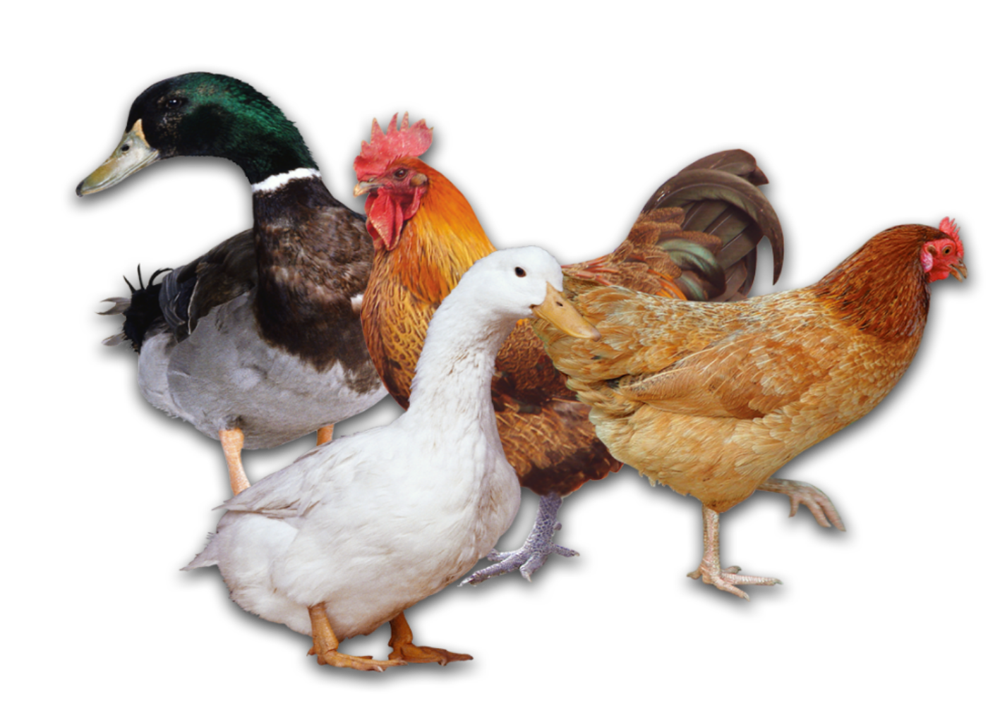

Lecithin in food industry
Lecithin is a natural additives (E 322) and, in its technological functions, it is an emulsifier and antioxidant.
The use of lecithin in the food industry is related to its ability to form and stabilize emulsions oil/water (different sauces and mayonnaises) and water/oil (margarines). Due to interaction of lecithin and structural components of dough (bakery and confectionary products) complex compounds are formed which play an important role in formation of the structure of partially prepared food and ready food products, slow down the process changes in high molecular substances of the crumb of bread when it is stored, improve rheological properties of dough as well as its resilience and elasticity. Addition of lecithin improves the rise of dough, makes it possible to use low gluten flour and to achieve more voluminous product outcome.
The ability of lecithin to stabilize suspensions is used in manufacturing food products with dried milk, cacao and extracts of coffee. Lecithin coating of the particles causes their hydrophilization, which leads both to their faster dissolving and to homogeneity and stability of suspensions.
Addition of lecithin has become mandatory in manufacturing chocolate, because it reduces the viscosity of the mix of fried cacao beans, sugar and cacao oil, reduces the time of mixing and saves cacao oil (addition of 0.5% of lecithin reduces viscosity by the same rate as addition of 5% of cacao oil).
More details are available here:
- (in Ukrainian) Аспекти застосування соняшникового лецитину у харчовій промисловості. Наукові праці ОНАХТ, вип. 36, т. 2, 2009р., с. 177-179.
- (in Ukrainian) Використання сухого соняшникого лецитину при виробництві хлібобулочних виробів та маргаринів. Тематичний збірник наукових праць Донецького національного Університету економіки і торгівлі. - 2012. - Вип. 28. - с. 169-174.
Lecithin and its components in pharmacology
Lecithin as a diet additive is used in food rations of people as an additional source of phospholipids in case of the following diseases:
- Disturbed cerebral circulation, exhaust of the central or peripheral nervous system, vegetovascular dystonia, headaches, sleep disturbances, increased excitability and irritability, worsening of memory and attention focusing, chronical fatigue and decreased capacity of work;
- Increased level of cholesterol in blood, atherosclerosis affecting vessels of different localization (brain, heart, peripheral arteries etc.), complex therapy of arrhythmia, ischemic heart disease and essential hypertension;
- Diseases of pancreas, type 1 and type 2 diabetes;
- Diseases of the liver, bile ducts, hepatoprotective properties in case of influence of toxic substances and alcohol, chronical hepatitis, cirrhosis;
- Dysfunctions of kidneys, prophylactics of lithogenesis;
- Prophylactics of fibrosis of the prostate and reduction of activity of spermatozoa;
- Complex therapy of allergy, skin diseases, psoriasis, eczema, neurodermatitis, etc.
At present, scientific research and developments of technologies in the field of extraction of individual natural lipids (in particular, phosphatidylcholine) and creation of artificial lipid membranes – liposomes – are carried out in cooperation with the Scientific Research Institute of Medical and Biological Problems at Dnipropetrovsk State Medical Institute, Dnipropetrovsk, and the Institute of Biotechology and Genomics of the National Academy of Science of Ukraine, Kiev.
Obtained results as of 01.01.2015 are presented here:
- (in Ukrainian) Сучасні уявлення про біологічні властивості лецитину. Медичні перспективи, т. XV, 2, 2010г., с. 123-135.
- (in Ukrainian) Біологічні властивості лецитину з соняшнику. Наукові праці ОНАХТ, вип. 42, т. 1, 2012р., с. 234-238.
- (in Ukrainian) Лецитин – його біологічні властивості. Методичний посібник. Дніпропетровськ: - 2013. - 64с.
- (in Ukrainian) Вплив соєвого та соняшникового лецитинів на показники функціонування печінки при інтоксикації тетрахлорметаном. Методичний посібник. Дніпропетровськ: - 2014. - с. 38.
- (in Ukrainian) Токсикологічна характеристика лецитину, збагаченого фосфатидилетаноламіном. Методичний посібник. Дніпропетровськ: - 2014. - с. 42.
- Technology of dry powder sunflower lecithin for food, feed and pharmaceutics// Presentation at 103 AOCS Annual Meeting, Long Beach, USA. - 2012.
- Biological properties of Deoil Sunflower lecithin 104 AOCS Annual Meeting&Expo Montreal. Canada. - 2013.
- Multiscale Molecular Simulation and Experimental investigation of Sunflower Phospholipids Liposomes Using for Scavenging Free Radicals. 104 AOCS Annual Meeting&Expo Montreal. Canada. - 2013.
- Dry powder lecithin and liposomal nanoemulsions from sunflower. ILPS Phospholipid Congress, Rotterdam. - 2011.
- (in Ukrainian) Патенти України:
- № 86972, Бюл. № 1, 10.01.2014
- № 92313, Бюл. № 15, 11.08.2014.
Lecithin as a feed additive.

Lecithin (essential phospholipids) is an ecologically pure natural product extracted from phosphatide concentrate of sunflower seeds. As a feed additive, it increases the energy level of the diet of animals, intensifies anabolic processes in the organisms of animals and improves immunobiological activity owing to the consumption of components of lecithin (phosphatidylcholine, unsaturated fatty acids and others).
Phospholipids are necessary components of all, without exception, cells of a living organism; they perform a number of functions, namely:
- serve as a structure depositing metabolic energy (there are no analogues in energy potential);
- are a structural components of membranes, provide their elasticity, prevent formation of free radicals, increasing by this antioxidant defense of animals, and reduce negative influence of stress factors;
- improve the transport capability of cell membranes, i.e., assist in absorption of nutrients of the feed and in growth and development of animals;
- improve calcification of bones, formation of musculoskeletal system and blood formation.
For animals, the most significant are unsaturated fatty acids, such as linoleic acid, which is not produced in organisms; therefore they have to be supplied with feed. In case of deficiency of this acid, growth gets suspended, resistance to infections and stresses weakens.
Being a part of phospholipids of biological membranes, lecithin provides their elasticity and participates in the exchange of fats between the liver and fatty tissues. Presence of lecithin guarantees permanent outflow of fats from the liver into the blood stream, which prevents development of adipose infiltration of the liver or, in case of its dystrophy, increases its detoxification function.
Thus, lecithin is used for preparation of wholesome, enriched with energy and biologically active substances feeds with hepatoprotective properties for increasing resistance and general detoxification of organisms of animals in stressful situations.
Special tests helped to determine doses of intake of lecithin and compositions of formula feeds for feeding:
- broilers:
- in the starting period;
- in the finishing period;
- pregnant sows;
- pigs on fattening;
- carps, freshwater catfish, besters;
- calves;
- cows in calf;
- fur-producing animals (minks)
- adult dogs and cats.
More details are available here:
- (in Ukrainian) Лецитин як фактор одержання продукції тваринництва. К: Освіта України,2010, с. 114.
- (in Ukrainian) Нові склади комбікормів для сільскогосподарських ,тварин, птиці та риби. Наукові праці ОНАХТ, випуск 36, т. 1, 2009р., с. 14-17.
- (in Ukrainian) Ефективність застосування лецитину в рибництві. Тваринництво України, № 3, 2010р., с. 24-27.
- (in Ukrainian) Використання лецитину як кормової добавки в раціонах молодняку свиней. Вісник інституту тваринництва центральних районів УААН, вип. 2, Дніпропетровськ, 2007р., с. 117-123.
- Numbers of Ukrainian patents (in Ukrainian):
- № 26705, Бюл. № 16, 10.10.2007г.
- № 32030, Бюл. № 8, 25.04.2008г.
- № 34328, Бюл. № 15, 11.08.2008г.
- № 35928, Бюл. № 19, 10.10.2008г.
- № 56982, Бюл. № 3, 10.02.2011г.
- № 56993, Бюл. № 3, 10.02.2011г.
- № 56994, Бюл. № 3, 10.02.2011г.
- № 71085. Бюл. № 13, 10.07.2012г.